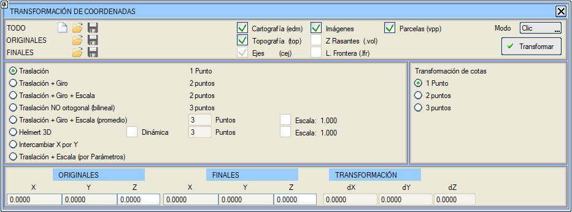
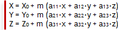
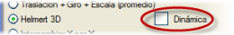
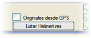
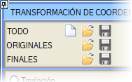

Bu başlık altında, koordinat referans sistemi (zonlar, elipsoidler, projeksiyon sistemleri,...) ile ilgili değişikliklerle ilişkili OLMAYAN tüm koordinat dönüşümleri gruplandırılmıştır.
Araçlar → Koordinat Dönüşümü menüsü, harita, topografya, plan eksenleri, resimler ve Parseller (vpp) verilerini dönüştürmeyi sağlar. Parseller (vpp) seçeneği, dönüşümü yüklenen parsellerin konturlarına uygular. Bu değişikliğin sonraki kullanımlar için korunması isteniyorsa, bir .vpp dosyası kaydedilmelidir.

Dönüşümler, orijinal ve nihai noktaların koordinatlarına (bunlara kalibrasyon noktaları denir) dayanarak yapılır; bu noktalar ya doğrudan fare ve uygun yakalama modu etkinleştirilerek (Tıklama modu) ya da koordinatlar girilerek (Klavye ile modu) verilebilir. Olası dönüşümler şunlardır:
- Öteleme: Bir başlangıç ve bir hedef noktası gerektirir.
- Öteleme+Döndürme: Bu durumda iki nokta gerekir ve ikinci nokta dönüştürüldüğünde mesafedeki hata gösterilir.
- Öteleme+Döndürme+Ölçekleme: Bu da iki nokta gerektirir.
- Ortogonal Olmayan Öteleme (Bilineer): Üç nokta aracılığıyla.
- Öteleme + Döndürme + Ölçekleme (ortalama): Üç veya daha fazla nokta ile, ortalama alarak. Bu durumda, her bir veri noktasını dönüştürürken mesafedeki hataları içeren bir sütun gösterilir ve her kalibrasyon noktasına bir ad atama imkanı sunulur. Ayrıca, veri noktalarını ikişer ikişer alarak ortaya çıkan döndürme ve ölçek değerlerini gösteren bir pencereye de erişim sağlanır. İlgili seçenek etkinleştirilerek ölçeği 1.000'e "zorlamak" mümkündür, ancak bu durumda Helmert dönüşümü daha hassastır.
1 metreden daha yakın olan nokta çiftleri, dönüşüm hesaplaması için dikkate alınmaz. Ayrıca, her noktanın onay kutusu, dönüşüm parametrelerinin hesaplanmasına katılıp katılmadığını belirtir ve etkinleştirildiğinde veya devre dışı bırakıldığında her şey otomatik olarak yeniden hesaplanır.
- 3D Helmert: Üç veya daha fazla veri noktası çifti için 3D HELMERT dönüşümü. Bu seçenek, verilerin geçerli olup olmadığını ve geçerliyse dönüşüm parametrelerini belirten dönüşüm matrisine erişim sağlar. Menüde ayrıca veri noktaları için X, Y, Z'deki hatalar da gösterilir.
Ortalama öteleme, döndürme ve ölçekleme dönüşümünde olduğu gibi, burada da dönüşüm parametrelerinin hesaplanması için kalibrasyon noktalarını etkinleştirmek veya devre dışı bırakmak, her şeyi gerçek zamanlı olarak yeniden hesaplamak ve her noktaya bir ad atamak mümkündür. İlgili seçenek etkinleştirilerek ölçeği 1.000'e "zorlamak" da mümkündür.
Bu dönüşüm ayrıca, giriş verileri, dönüşüm parametreleri ve giriş verilerini dönüştürürken oluşan hataları içeren bir liste ( Helmert.res) oluşturmayı da sağlar.
3D HELMERT dönüşümünün daha gelişmiş bir dinamik varyantı vardır ve şu şekilde davranır:
- Aktif kalibrasyon noktalarının bir üçgenlemesi yapılır. Aşağıdaki şekil, 11 kalibrasyon noktasıyla dinamik bir 3D Helmert dönüşümü için olası bir üçgenlemeyi göstermektedir:
- Her bir aktif kalibrasyon noktası için, o noktaya dayanan üçgenlerin köşe noktalarını tanımlayan tüm veri çiftlerinin bilgileri kullanılarak bir 3D Helmert dönüşümünün parametreleri hesaplanır (bkz. Helmert.res listesi). Bu şekilde, 1 numaralı noktaya uygulanacak 3D Helmert dönüşümü, üçgenleri paylaştığı 1, 2, 3, 4, 8 ve 10 numaralı noktalar için hesaplanan olacaktır. Benzer şekilde, 3 numaralı noktaya uygulanan dönüşüm, 1, 3, 4 ve 5 numaralı noktalara göre hesaplanan olacaktır ve 4 numaralı nokta için dönüşüm, 1, 3, 4, 5, 6, 7 ve 10 numaralı noktalar için hesaplanan bir 3D Helmert'e karşılık gelecektir.
- Harita dönüştürülürken, her nokta için, onları içeren üçgenin köşe noktalarının üç dönüşümü, noktanın üçgen içindeki konumuna bağlı olarak ağırlıklandırılarak kullanılır. Herhangi bir üçgenin içinde olmayan noktalar için, en yakın noktanın dönüşümü kullanılır. Bunu önceki şekle uygulayarak, haritaya ait sarı noktanın uğrayacağı dönüşüm, daha önce bahsedilen 1, 3 ve 4 numaralı noktalar için hesaplanan dönüşümlerin ağırlıklı bir dönüşümü olacaktır. Ağırlıklandırma, sarı noktanın onu içeren üçgenin her bir köşe noktasına olan mesafesine göre yapılacaktır.
İletişim kutusundan çıkıldığında, dönüşüm (hem statik hem de dinamik 3D Helmert) etkin kalır ve bir GPS'ten veri takibi gibi programın diğer yardımcı programları tarafından kullanılabilir.
3D Helmert dönüşümü (statik veya dinamik) için, orijinal koordinatları bir GPS ile okunan veriler (enlem, boylam, yükseklik) olarak girme imkanı vardır. Bu durumda program şu şekilde hareket eder:
- (Enlem, boylam) WGS84 koordinatları, CRS iletişim kutusunda tanımlanmış olan dönüşüm aracılığıyla (örneğin, ED50'den WGS84'e bir dönüşüm tanımlanmışsa, X ve Y koordinatları ED50'de elde edilir) kaynak CRS'de (X,Y)'ye dönüştürülür.
- Eğer hedef CRS için bir düşey referans sistemi tanımlanmışsa (örneğin EGM08_REDNAP.gzb), veri yüksekliği Z'ye (deniz seviyesinden yükseklik) dönüştürülür. Değilse, veri yüksekliğinin zaten deniz seviyesinden olduğu varsayılır.
- Bu (X,Y,Z) koordinatları orijinal olarak kullanılır. Eğer bu koordinatların nihai değerleri biliniyorsa, o zaman bir koordinat dönüşümü (yerel kalibrasyon için) tanımlamak mümkündür.
- Bu koşullar altında, GPS takibi bağlanırsa, okunan koordinatlar önce CRS dönüşümünden ( düşey referans sistemi dahil) ve sonra 3D Helmert dönüşümünden (statik veya dinamik) geçirilir.
- 1, 2 veya 3 noktaya göre kot dönüşümü:
- Tek noktaya göre: Tüm noktalara tek bir kot artışı (∆Z) uygulanır.
- İki noktaya göre: Maksimum eğim çizgisi iki veri noktasından oluşan bir düzlem (X,Y,∆Z) oluşturulur ve her noktaya konumuna (X,Y) göre karşılık gelen ∆Z uygulanır.
- Üç noktaya göre: Üç veri noktasıyla bir düzlem (X,Y,∆Z) oluşturulur ve her noktaya konumuna (X,Y) göre karşılık gelen ∆Z uygulanır.
- X ve Y'yi Değiştir: X koordinatının değerlerini Y koordinatının değerleriyle ve tersini değiştirir. Bu, örneğin, birinci sütunun ordinatlar ve ikinci sütunun apsisler olduğu bir nokta bulutunun içe aktarıldığı durumlarda kullanışlıdır.
- Öteleme + Ölçekleme (parametrelerle): Bu durumda, iletişim kutusunda gösterildiği gibi uygulanan yeni X ve Y başlangıç noktası ve Ölçek faktörü verilir:
- Xnihai = (Xorijinal - Başlangıç_X)/ÖlçekFaktörü.
- Ynihai = (Yorijinal - Başlangıç_Y)/ÖlçekFaktörü.
 Orijinal ve nihai başlangıç verileri, .dtc uzantılı dosyalar aracılığıyla, bir bütün olarak veya ayrı ayrı kaydedilebilir ve yüklenebilir.
Bu dosyalardan biri yüklendiğinde, diğer veriler sıfırlanmaz ve konumu adıyla aranır. Eğer aynı ad yoksa, listenin ilk boş adına eklenir. Bu tür dosyalar birbiriyle uyumludur, öyle ki bir toplam dosyadan sadece orijinal veya nihai koordinatlar okunabilir veya bir nihai koordinat dosyası orijinal olarak okunabilir, vb.
Orijinal veya nihai koordinatları yükleme seçenekleri, .bas ve .toc uzantılı dosyaları da kabul eder.
Bir .toc dosyası yükleyebilmek için, Koordinat Dönüşümü menüsünün Ad sütunu (varsayılan olarak P1, P2, P3... değerleriyle), yükleyeceğimiz .toc dosyasının ilk sütunuyla (birinci sütun nokta numarası, ikinci sütun X, üçüncü sütun Y, dördüncü sütun Z) eşleşmelidir.
|